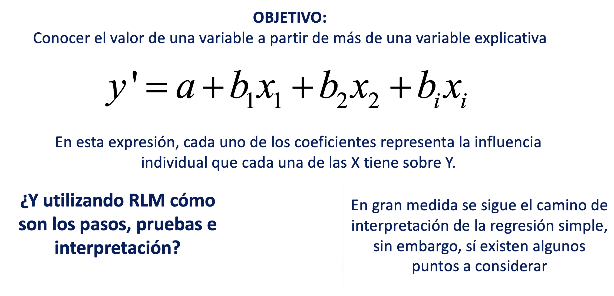
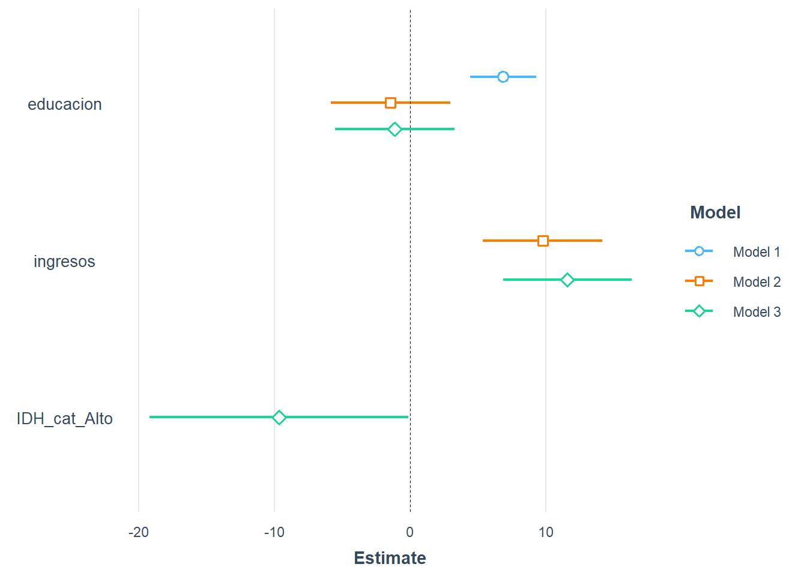

FACULTAD DE CIENCIAS SOCIALES - PUCP
Curso: SOC294 - Estadística para el análisis sociológico 1
Semestre 2025 - 2
Técnica estadística que predice el valor de una variable con los valores de otra. La regresión lineal simple es un método útil para predecir una respuesta cuantitativa Y partiendo de una sola variable predictora X, asumiendo que hay una relación aproximadamente lineal entre X e Y. Matemáticamente, esta relación lineal se representa como
Y = a + bX + E
Y = variable dependiente o explicada. Variable cuyos valores se desea predecir o resumir. Un modelo de regresión lineal tiene como variable dependiente una variable numérica
a = Constante: ordenada en el origen, valor esperado de “Y” cuando X=0
b = Pendiente: mide el cambio de la variable “Y” por cada unidad de cambio de “X”. Su magnitud sirve para predecir en cuánto aumentará “y” cada vez que “x” se incremente en una unidad.Su signo puede ser positivo o negativo, y en esto la interpretación coincide con la correlación.
X = variable utilizada para predecir el valor de la variable dependiente. También se denomina variable predictora o variable explicativa. Las variables explicativas que son parte del modelo suelen ser numéricas o intervalares; sin embargo, es posible incorporar variables explicativas ordinales o categóricas.
E = Corresponde a las desviaciones de los valores verdaderos de Y con respecto a los valores esperados de “Y” (diferencia entre lo observado y estimado por el modelo). Asumimos que es independiente de “X”.
La relación entre las variables depende de la pendiente:
Si b es positivo, Y aumenta cuando X aumenta. Es una relación directa / positiva.
Si b es negativo, Y aumenta cuando X disminuye. Es una relación inversa / negativa.
Si b es cero.Y no cambia cuando X varía. No existe relación entre las variables.
Asimismo, con el método de la regresión lineal se puede responder las siguientes preguntas:
Analizar si hay una asociación entre las variables mediante un test de independencia estadística.
Analizar la dirección de la asociación (directa o inversa).
Evaluar la fuerza de la asociación usando una medida de asociación llamada correlación de Pearson.
Estimar una ecuación de regresión que “predice” los valores de la variable dependiente para valores de la variable independiente.
Hasta el momento, nos hemos encontrado en el campo del análisis bivariado. Sin embargo, en el mundo social, difícilmente se pueden explicar los fenómenos de interés con una sola variable. Incluso si nos interesa evaluar el efecto de un a variable en específico sobre un fenómeno de estudio, hay muchos otros factores que podrían influir en aquello que nos interesa explorar. Por ello, necesitamos recurrir al análisis multivariado y conocer el concepto de control estadístico.
El control estadístico nos permite aislar el efecto de otras variables. La idea es:
Evaluar si la asociación entre X e Y permanece si se remueve el efecto de otra variable, es decir, si se controla por una tercera variable.
Se analiza la relación entre X e Y para valores similares o iguales de una variable Z. De esta manera se elimina la influencia de Z en la relación entre X e Y. Lo anterior nos ayuda a acercarnos a una interpretación causar X -> Y.
Si la relación entre X e Y desaparece cuando se controla por Z, se dice que la relación era espúrea. En otras palabras, la relación dependendia de la influencia de Z y no de una conexión directa entre X e Y.
Sobre la regresión lineal múltiple:

Seguiremos los siguientes pasos para el análisis:
library(rio)
library(dplyr)
library(ggplot2)
library(jtools)
library(car)data = import("Data-provincias.xlsx")
str(data)## 'data.frame': 195 obs. of 14 variables:
## $ ubigeoRegion : chr "100000" "080000" "130000" "130000" ...
## $ ubigeoProvincia: chr "100800" "081100" "130900" "130500" ...
## $ nombreRegion : chr "HUÁNUCO" "CUSCO" "LA LIBERTAD" "LA LIBERTAD" ...
## $ nombreProvincia: chr "Pachitea" "Paucartambo" "Sánchez Carrión" "Julcán" ...
## $ PL : num 81.8 92.5 50.9 56 52.5 90.4 92.1 73.3 68.9 55.7 ...
## $ FP : num 18.2 7.5 49.1 44 47.5 9.6 7.9 26.7 31.1 44.3 ...
## $ FP_cat : chr "Menos de 20%" "Menos de 20%" "De 20% a 50%" "De 20% a 50%" ...
## $ Años_educ : chr "Menos de 6" "Menos de 6" "Menos de 6" "Menos de 6" ...
## $ educacion : num 3.35 3.83 3.93 3.94 4.37 ...
## $ ingresos : num 356 235 305 168 271 ...
## $ IDH_cat : chr "Bajo" "Bajo" "Bajo" "Bajo" ...
## $ IDH : num 0.273 0.242 0.286 0.22 0.278 ...
## $ Reg_nat : chr "SIERRA" "COSTA" "SIERRA" "SELVA" ...
## $ Sierra_no : chr "SIERRA" "NO SIERRA" "SIERRA" "NO SIERRA" ...¿Qué factores explican se relacionan con el voto por Fuerza Popular (FP) en segunda vuelta a nivel provincial (2021)?
modelo1=lm(FP~educacion,data=data)
summary(modelo1)##
## Call:
## lm(formula = FP ~ educacion, data = data)
##
## Residuals:
## Min 1Q Median 3Q Max
## -28.168 -14.383 -0.674 12.591 42.289
##
## Coefficients:
## Estimate Std. Error t value Pr(>|t|)
## (Intercept) 5.3652 5.0525 1.062 0.29
## educacion 3.8947 0.6967 5.590 7.67e-08 ***
## ---
## Signif. codes: 0 '***' 0.001 '**' 0.01 '*' 0.05 '.' 0.1 ' ' 1
##
## Residual standard error: 17.06 on 193 degrees of freedom
## Multiple R-squared: 0.1393, Adjusted R-squared: 0.1349
## F-statistic: 31.25 on 1 and 193 DF, p-value: 7.668e-08Sabremos si la variable independiente impacta en la dependiente al revisar la significancia del p valor.
Establezcamos nuestras hipótesis:
H0: El modelo de regresión no es válido
H1: El modelo de regresión es válido (variable X aporta al modelo)
Como el p valor es 7.668e-08, entonces podemos afirmar que hay suficiente evidencia para rechazar la H0, por lo que concluimos que el modelo sí es válido como modelo de predicción. Es decir, podemos decir que hay evidencia estadística suficiente para afirmar que existe una relación significativa entre los años de educación en promedio y el porcentaje de voto obtenido por Fuerza Popular en las provincias.
En otras palabras, podemos decir que los años de educación en promedio sí influyen en el porcentaje de voto obtenido por Fuerza Popular en las provincias.
Explica cómo es el efecto de x en y. Para ello analizamos el valor del parámetro de la pendiente.
En este caso, al ser este valor 3.8947, concluimos que cada vez que el promedio de años de educación aumenta en 1, el % de votos por Fuerza Popular aumenta en 3.89. Es decir, tenemos una relación directa o positiva.
Analizar cuánto de la variabilidad de la variable dependiente (y) es explicada por la variable independiente (x), para ello revisamor el R2 (Multiple R-squared). Los valores van de 0 a 1. Mientras más cercano esté el R2 a 1, mayor será la variabilidad explicada. El R2 es un indicador de ajuste del modelo.
En nuestro modelo, este arrojó el valor de 0.1393, por lo que podemos concluir que aproximadamente el 13.9% (0.1393*100)del % de votos por Fuerza Popular es explicado por el promedio de años de educación.
Esto significa que la cantidad de variabilidad explicada es baja; en este caso, los cambios en los años de educación explican solo una pequeña proporción de la variación en el porcentaje de votos por Fuerza Popular.
Hallar la ecuación de la recta del modelo. Para lograrlo, revisemos los dos valores de la tabla que se encuentran en la columna de “Estimate”, el valor de la primera fila es el del intercepto (a) y el de la segunda es el de la pendiente (b).
Del segundo paso, ya conocíamos que el valor de la pendiente es +3.8947 Si volvemos a revisar nuestra tabla podemos observar que en el cruce de Estimate e Intercept está el valor de 5.3652, este sería nuestro intercepto. Ahora, armemos nuestra ecuación de la recta:
\[ Y = 5.36520 + (3.89471)\times \text{educacion} \]
Donde:
También podemos obtener los coeficientes de intercepción/intercepto y pendiente de la siguiente forma:
modelo1$coefficients## (Intercept) educacion
## 5.365177 3.894698Sustituyendo el valor de “x” en la ecuación, tenemos:
Para realizar una predicción debemos proponer un valor que se encuentre dentro de los valores de la X.
summary(data$educacion)## Min. 1st Qu. Median Mean 3rd Qu. Max.
## 3.351 5.601 6.927 7.037 8.328 11.111Como educación puede ir de 3 a 11, podemos proponer cualquier valor dentro de ese rango. Veamos qué se espera de una provincia en la que los años de educación en promedio sean 11.
Y = 5.36520 +3.89471*11
Y## [1] 48.20701Cuando los años de educación en promedio son 11, se espera que en esa provincia Fuerza Popular haya obtenido un 48 % de los votos.
¿Qué sucede si agregamos una variable a nuestro modelo anterior?
¿Los años de educación y los ingresos mensuales en promedio en una provincia pueden ayudar a explicar el porcentaje de voto que obtuvo Fuerza Popular?
modelo2 = lm(FP ~ educacion + ingresos, data)
summary(modelo2)##
## Call:
## lm(formula = FP ~ educacion + ingresos, data = data)
##
## Residuals:
## Min 1Q Median 3Q Max
## -40.012 -12.761 -1.263 11.183 45.018
##
## Coefficients:
## Estimate Std. Error t value Pr(>|t|)
## (Intercept) 17.44495 5.56797 3.133 0.002 **
## educacion -0.82138 1.26933 -0.647 0.518
## ingresos 0.03222 0.00738 4.365 2.07e-05 ***
## ---
## Signif. codes: 0 '***' 0.001 '**' 0.01 '*' 0.05 '.' 0.1 ' ' 1
##
## Residual standard error: 16.32 on 192 degrees of freedom
## Multiple R-squared: 0.217, Adjusted R-squared: 0.2089
## F-statistic: 26.61 on 2 and 192 DF, p-value: 6.291e-11Establezcamos nuestras hipótesis:
Luego nos fijamos en el p-value Como el p valor es < 6.291e-11 entonces podemos afirmar que hay suficiente evidencia para rechazar la H0, por lo que concluimos que el modelo es válido como modelo de predicción.
El VIF (Variance Inflation Factor) o Factor de Inflación de la Varianza mide cuánto se incrementa la varianza de los coeficientes en una regresión lineal múltiple debido a la colinealidad entre las variables independientes.
VIF = 1 → No hay colinealidad.
VIF entre 1 y 5 → Colinealidad moderada (normalmente aceptable).
VIF > 10 → Colinealidad severa (considerar eliminar o transformar variables).
vif(modelo2)## educacion ingresos
## 3.629622 3.629622Observamos el R2 ajustado.
Analizar cuánto de la variabilidad de la variable dependiente (y) es explicada por las variables independientes elegidas, para ello revisamos el R2 (Adjusted R-squared, por ser un modelo lineal múltiple).
En nuestro modelo, este arrojó el valor de 0.2089 , por lo que podemos concluir que el modelo explica aproximadamente el 20.89% (0.2089*100) de la variabilidad en el % de votos que obtuvo Fuerza Popular (variable dependiente).
Recordemos que el R cuadrado puede tomar valores entre 0 y 1. Un R cuadrado de 1 indica que el modelo explica toda la variabilidad de la variable Y. Un R cuadrado de 0 indica que el modelo no explica nada de la variabilidad de la variable Y.
Revisamos p-value por cada variable independiente.
Podemos obtener extraer los coeficientes del modelo:
No olvidar identificar el signo de cada coeficiente, este tendrá repercusión en la ecuación y su futura aplicación
round(modelo2$coefficients,3)## (Intercept) educacion ingresos
## 17.445 -0.821 0.032De esa manera puedo hallar la ecuación:
\[ Y = 17.445 + (-0.821) \times \text{educacion} + (0.032)\times \text{ingresos} \]
Es decir, se tienen las siguientes relaciones entre VD y las VI:
Por cada sol adicional en ingresos, el % de voto por Fuerza Popular aumenta en 0.032 puntos. (relación directa).
Por cada año de educación adicional , el % de voto por Fuerza Popular disminuye en 0.821 puntos (relación inversa). Sin embargo, esta variable no tiene un impacto significativo en la predicción.
OJO: La ecuación de la recta debe incluir TODAS las variables analizadas, tengan o no una influencia significativa en la VD.
¿Los años de educación, los ingresos mensuales en promedio y el tener IDH alto o no en una provincia pueden ayudar a explicar el porcentaje de voto que obtuvo Fuerza Popular?
library(fastDummies)## Warning: package 'fastDummies' was built under R version 4.4.3data = dummy_cols(data, select_columns="IDH_cat")
names(data)## [1] "ubigeoRegion" "ubigeoProvincia" "nombreRegion" "nombreProvincia"
## [5] "PL" "FP" "FP_cat" "Años_educ"
## [9] "educacion" "ingresos" "IDH_cat" "IDH"
## [13] "Reg_nat" "Sierra_no" "IDH_cat_Alto" "IDH_cat_Bajo"modelo3 = lm(FP ~ educacion + ingresos +IDH_cat_Alto, data)
summary(modelo3)##
## Call:
## lm(formula = FP ~ educacion + ingresos + IDH_cat_Alto, data = data)
##
## Residuals:
## Min 1Q Median 3Q Max
## -38.371 -11.572 -2.122 11.310 44.425
##
## Coefficients:
## Estimate Std. Error t value Pr(>|t|)
## (Intercept) 13.413989 5.882341 2.280 0.0237 *
## educacion -0.646030 1.262626 -0.512 0.6095
## ingresos 0.038223 0.007917 4.828 2.82e-06 ***
## IDH_cat_Alto -9.648597 4.831734 -1.997 0.0473 *
## ---
## Signif. codes: 0 '***' 0.001 '**' 0.01 '*' 0.05 '.' 0.1 ' ' 1
##
## Residual standard error: 16.19 on 191 degrees of freedom
## Multiple R-squared: 0.2331, Adjusted R-squared: 0.221
## F-statistic: 19.35 on 3 and 191 DF, p-value: 5.37e-11modelo3$coefficients## (Intercept) educacion ingresos IDH_cat_Alto
## 13.41398934 -0.64603001 0.03822324 -9.64859668Para interpretar cómo cada variable independiente contribuye a la variabilidad de la variable dependiente, podemos usar los coeficientes estandarizados. Estos coeficientes nos ayudan a comparar, en una misma escala, el impacto que tiene cada variable independiente sobre la variable dependiente, permitiéndonos identificar cuáles tienen un efecto más fuerte.
library(jtools)
summ(modelo3, scale=T)| Observations | 195 |
| Dependent variable | FP |
| Type | OLS linear regression |
| F(3,191) | 19.35 |
| R² | 0.23 |
| Adj. R² | 0.22 |
| Est. | S.E. | t val. | p | |
|---|---|---|---|---|
| (Intercept) | 33.91 | 1.29 | 26.25 | 0.00 |
| educacion | -1.14 | 2.22 | -0.51 | 0.61 |
| ingresos | 11.56 | 2.39 | 4.83 | 0.00 |
| IDH_cat_Alto | -9.65 | 4.83 | -2.00 | 0.05 |
| Standard errors: OLS; Continuous predictors are mean-centered and scaled by 1 s.d. The outcome variable remains in its original units. |
Los resultados anteriores nos demuestran que las variables con mayor impacto son ingresos (11.56) y IDH_cat_Alto (-9.65)
plot_summs(modelo1,modelo2,modelo3, scale = T)